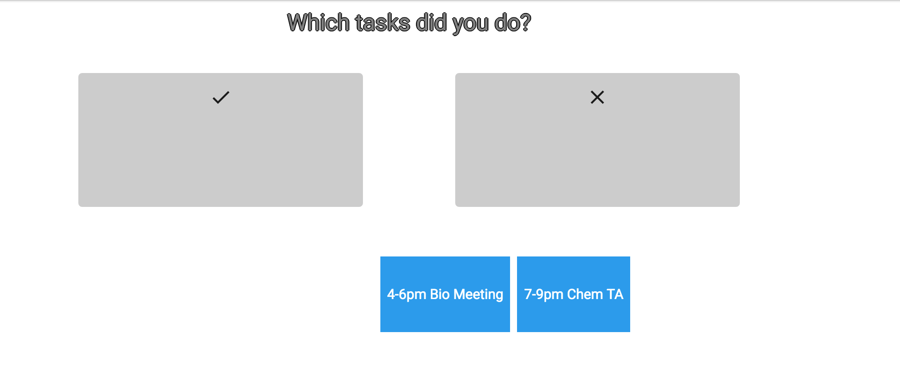
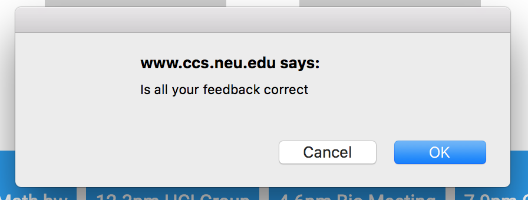
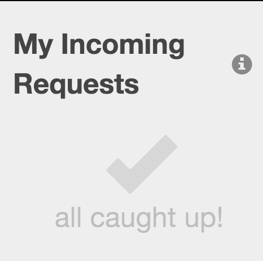

The interface does not indicate what the functionality of system is. I had to look on the corresponding google doc of this project in order to determine what this interface is for. This quality of the interface results in a lower learnability. Users generally do not look at documentation for a system to determine what it does; they like to try it out. The severity of this issue is high because if users are initially confused, they are less likely to work to learn how to operate the system.
Despite the initial confusion, the visibility of the interface is high because everything is on one page. This minimalist design makes it easy to see all the functionality the system offers and reduces users' chance of getting lost. Additionally, there is no extra information in the interface that made it confusing, such navigation.
A feature of the app that demonstrates low external consistency is the fact that the radio buttons operate as check-boxes. This was unclear because I was unsure what the functionality of these hybrid-buttons was like. This issue is moderately severe because the interface is still useable, yet this is a puzzling feature.
However, high external consistency is demonstrated because the search bar on the left is labeled "search" and the names of the categories are meaningful and clear. In this way, the system speaks the user's language and displays clear information. This is also seen in the use of the "forums", "tutorials", and "about us" on the side since many other systems have these features--especially "about us".
A severe usability issue of the app is the color scheme. The title is barely readable at the top for me--someone without any visual impairments. Reading this text would be incredibly difficult for users with impairments. Additionally, the low disparity in color between the side bar and the main area is not aesthetically pleasing. A less severe issue is that the grey with the orange "display results for" is not aesthetically pleasing. A more pleasing color scheme would benefit this interface greatly.
Another severe usability issue is the two search bars. It is unclear what the difference in functionality is of these. How is "search" different from "display results for"? Why are the categories of the radio buttons on the left different than the categories in the drop down options on the right? This is extremely unclear and severely reduces learnability. An alternative would be to include text that makes the distinction clear, or to use metaphors (perhaps icons) to demonstrate the difference between the bars.
Some issues that were encountered when the I attempted the tasks were that I could not complete the tasks because the interface looks incomplete. I do not know how to see an album and select what to play, as is a task for this project. I could not evaluate this system on whether is uses recognition or recall because there was no search functionality. Additionally, I could not evaluate the system's response when I made an error because the search functionality was not enabled. How can I undo or cancel I search I just completed and just start from scratch? Considerations for when implementing search functionality is to allow users to cancel or undo a search, and proper error handling that speaks the users language.
The final confusing feature of this interface that is a smaller usability issue is that the button on the top left is confusing--the one with the text in it. Nothing happens when it is clicked on. Is this missing functionality or is it not supposed to do anything?
This application has very high visibility. On the homepage all the different functionality of the system is made clear with the navigation tab at the top; the essential information such as the day's schedule is at the home page. As for speaking the user's language it generally does a good job at doing so. An example of it doing a good job is how it says "create a new task" in the navigation bar; similarly, suggestions and today's schedule is clear. However, a usability issue of mild severity is that there are a few ambiguous terms in regards to speaking the user's language. The first is "class statistics"; it is not clear what the statistics being displayed are. The second is "feedback". When I was completing the third task, it was not clear that I had to press "feedback" to give my senitments on the task. This is because feedback is generally used to denote giving the system feedback. An idea to clear this confusion would be to give a different name to this tab
 A positive feature of this system is that it has high internal consistency. This can be seen with the dragging mechanism. When creating a new task and giving feedback on one, the objects are dragged into a grey box. This is clear and promotes learnability because the user is familiar with it across the functionality of this app. Additionally, the font and color scheme is consistenty across the app which increases the internal consistency. Another good quality of this system is that it has confirmation dialogs to prevent error prevention when creating a task. However, if an invalid task is created, there is no error box that comes up. Preventing creating a task without a date for example could be a good idea to prevent a date-less task in the system. This is a usability issue of moderate severity. An issue regarding undo buttons of greater severity is that once a user drags a task to "completed" vs "not completed", there is no way to undo a task. This reduces learnability and should be fixed to allow users to make errors. The same applies when users create a task by dragging subject and type of assignment into a grey box. The interface has good error prevention because it is impossible to create invalid dates and times through drop down options and a calendar.

As for external consistency, it is high because the suggestions have an "i" button, which is usually used to denote information. High external consistency is also seen when the user gives feedback on how they felt about the task: a smiley face to denote it going well, a satisfied face, and a sad face to show that the task went poorly. An feature that was a little confusing was that there is the "kill" face. Especially cross culturally, this can be confusing for some users. What is the difference between "sad" and "kill". "Shop" also shows high external consistency because users are familiar with the concept of trading in points for rewards. The system also takes advantage of recognition as opposed to recall which is positive. This promotes learnability and memorability. Examples of this is that the user's tasks are displayed when they gave to give feedback, as opposed to them remembering it. Similarly, when choosing the date, the month and year are chosen as opposed to the user entering in information themselves.
The navigation bar is a good feature of this app because it promotes learnability for new users, as well as serving as shortcuts for expert users. The system is not very complex in general, so not a lot of shortcuts are needed for experts.
The interface is very visually pleasing: the font and the color scheme. The design is not cluttered and it takes advantage of minimalism in order to give the users the information that they need the simplest way. As for error messages being expressed in plain language, this is not applicable to this app because it does not give error messages to users, for example when a user does not enter in a date. This is an issue of moderate severity and error messages for invalid tasks should be prevented.
The issue of the highest severity of this app is that while the functionality and tasks are clear, the premise of the website is confusing. Why is feedback being given on a task? What is being done with the feedback? Why is it entered? Why does a user have points and where do they come from? What do the statistics of a class represent? The gamification and the process of the system can be made more clear. A good way to do this would be to implement a walk-through for beginners or proper help and documentation.
A positive feature of this website is that it has very high visibility. The essential information is displayed on the home page: incoming requests and outgoing requests. This makes sense because this is probably the primary information that users want to see when they open the system. Another feature that adds to the visibility is the navigation bar at the top of the page. It effectively communicates to users what functionality and information is available.
A moderately severe issue that this system has is in regards to speaking the users language. What is referred to by "request" vs "role" was not very intuitive to wrap my head around; I had to read the description that was provided and play around with the system before finally understanding. In particular, the use of "role" used to refer the permission a particular employee has was not very obvious. This confusion reduces the learnability that the high visibility sets up. It would be much more learnable if a more intuitive word was used. However, despite this confusion in speaking the user's language, the system employs high internal consistency, which is what made it possible for me to catch on what is meant by "request" and "role; it meant the same thing every time. In the same vein of speaking the user's language, the "i" buttons that helped users understand incoming vs outgoing requests is a feature of the interface that makes it very learnable.
The interface uses high external consistency in the icons and images which increases the learnability. This can be seen in the check mark to denote being caught up, the home button to navigate users to the home page, the plus button to add a request, and the "i" information buttons. Similarly, the three bars to denote the drop down navigation bar was helpful and externally consistent as well.
A more severe issue of this system is that undo and cancel buttons are not supported as frequently. For example, after I accepted the incoming request, I was unable to undo it. This becomes problematic when a user accidentally presses a button. Additionally, no cancel button is offered when a user tries to create a new role or request. In the same vein, error prevention is not offered very frequently in this interface either. An example of this would be when someone clicks "accept request" for something to pop up and say "Are you sure you would like to cancel the request?". Another layer of error prevention would be when someone logs out for something to pop up and say, "are you sure you want to log out?". Good error prevention is however implemented when the system does not allow users to enter whatever they want for "users" and "roles" when assigning access, creating, roles, or requests.
A feature of this app that I enjoyed was the aesthetic and the minimal design. As discussed with the high visibility, no extra, cluttered information was displayed. It is very lightweight and simple, which makes it pleasant to work with. However, I think the interface could benefit from a little more color in the design. This problem is very low in severity.
Another issue that is not severe is that in the search bar it says "Enter Search Query"; I think it would be more accessible of the word "query was not used"; keeping the vocabulary simple is important for the accessibility. This applies especially when considering the different literacy and proficiencies in English of users of the system.